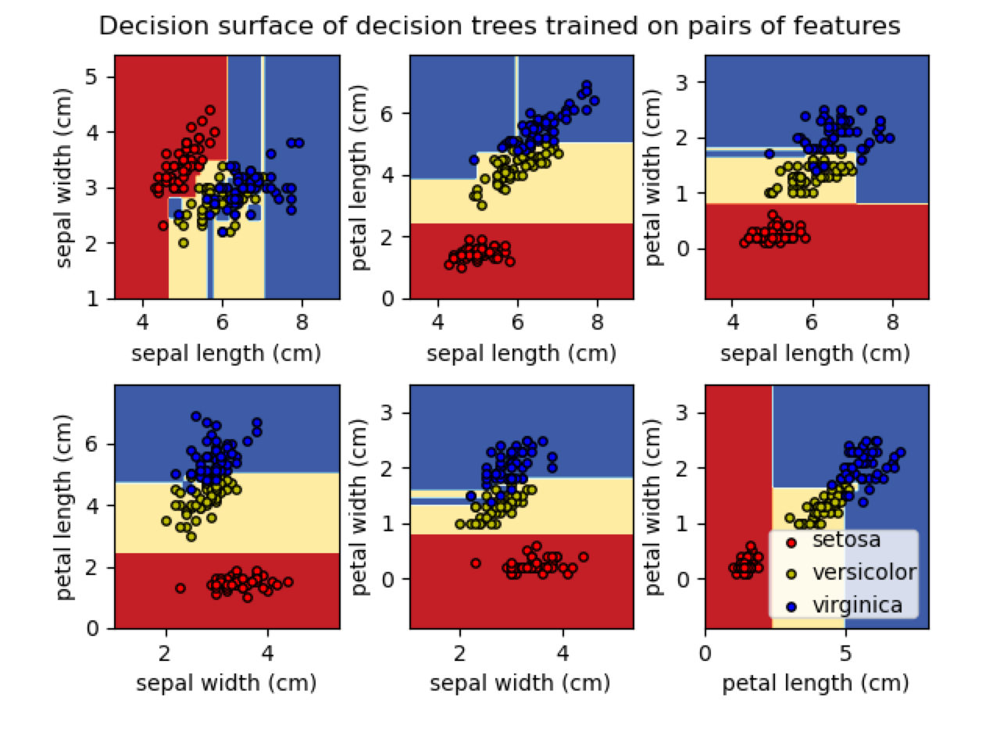
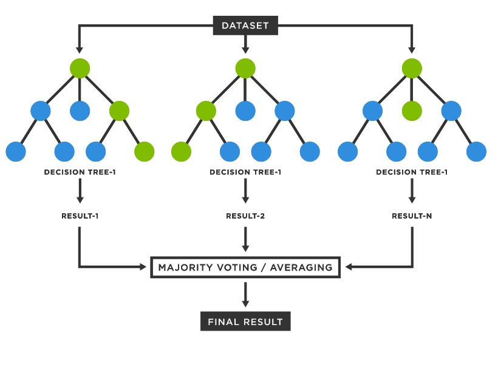

Classification I
6.1 Summary
6.1.1 Basics of remote sensing classification
Before learning about remote sensing classification, we need to have some basic knowledge of machine learning.
6.1.1.1 Decision Trees
A decision tree is a flowchart-like structure that represents different possible decisions and their possible consequences. In machine learning, decision trees can be used for classification or regression tasks.
Decision tree classification involves using a decision tree to classify data points into different categories based on their features. The decision tree algorithm uses the features of the data to create a set of rules that can be used to classify new data points.
Decision tree regression, on the other hand, involves using a decision tree to predict a numerical value for a target variable based on the values of several input variables. The decision tree algorithm creates a model that maps input variables to a predicted output value.
In both cases, decision trees are trained on a set of labeled data, meaning data with known classifications or target values, and then used to predict classifications or target values for new data points. The quality of the model is evaluated based on its accuracy in predicting classifications or target values for the test data.
Classification


Regression

6.1.1.2 Random Forest
Random Forest builds multiple decision trees and combines their predictions to improve accuracy and reduce overfitting. It is particularly useful for high-dimensional datasets. The algorithm selects a random subset of the training data and a random subset of the input features for each decision tree, and then combines their predictions through a majority vote or average.

6.1.1.3 Support Vector Machine
Support Vector Machine (SVM) works by finding the optimal hyperplane that maximally separates the data into different classes. The algorithm selects the hyperplane with the largest margin between the classes, which is achieved by finding the support vectors, or the data points closest to the decision boundary. SVM can handle non-linearly separable data by using kernel functions to map the data to a higher dimensional space.

6.1.2 Image classification
HImage classification is the task of categorizing an image into a predefined set of classes. This is typically done using machine learning algorithms, such as convolutional neural networks (CNNs), which learn to recognize patterns in images and make predictions based on those patterns. There are several types of image classification methods, including supervised learning, unsupervised learning.

6.2 Application
6.2.1 Classification Workflow
Here is my application of supervised classification of remotely sensed images in GEE using random forests, and my procedure is as follows:
my code link: https://code.earthengine.google.com/007b0dfe5b99cad35fd48c9adc919eca

6.2.2 Classification Output
The results after random forest classification and pixel training and classification, respectively, are obtained as follows:


6.3 Reflection
After learning about the basics of remote sensing classification using machine learning, as well as image classification methods and their applications in remote sensing, urban and environmental domains, I have gained valuable knowledge and insights.
Firstly, I have learned about the importance of feature selection and extraction in remote sensing classification. Different features, such as spectral, spatial, and textural features, can be used to improve the accuracy of classification results. Machine learning algorithms, such as random forests and support vector machines, can be used to classify remote sensing data based on these features.
Secondly,I have learned about the applications of image classification in various fields, such as urban planning, land use and land cover mapping, and environmental monitoring. These applications have significant implications for understanding and addressing various environmental and societal issues.
Moreover, I have gained an understanding of the challenges involved in remote sensing classification, such as the presence of mixed pixels, noise, and the need for ground truth data. These challenges require careful consideration and evaluation when choosing and implementing classification methods. I have reflected on the limitations and biases that can exist in remote sensing data and how these can impact classification accuracy. It is important to be aware of these limitations and to critically evaluate the data and methods used in remote sensing classification.
References:
Zhang, W., Jiang, H., & Wu, S. (2019). An urban land-use classification method based on deep convolutional neural network and extreme learning machine. International Journal of Remote Sensing, 40(6), 2236-2258.
Lu, L., Li, Y., Fu, X., & Liu, X. (2019). An object-based convolutional neural network for land-use classification using multi-source remote sensing data. Remote Sensing, 11(8), 888.
Liu, X., Jiao, L., & Guo, Y. (2020). Monitoring urban forest cover change based on object-based convolutional neural network. IEEE Journal of Selected Topics in Applied Earth Observations and Remote Sensing, 13, 2652-2660.